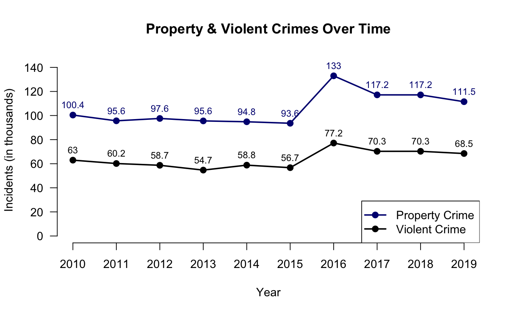
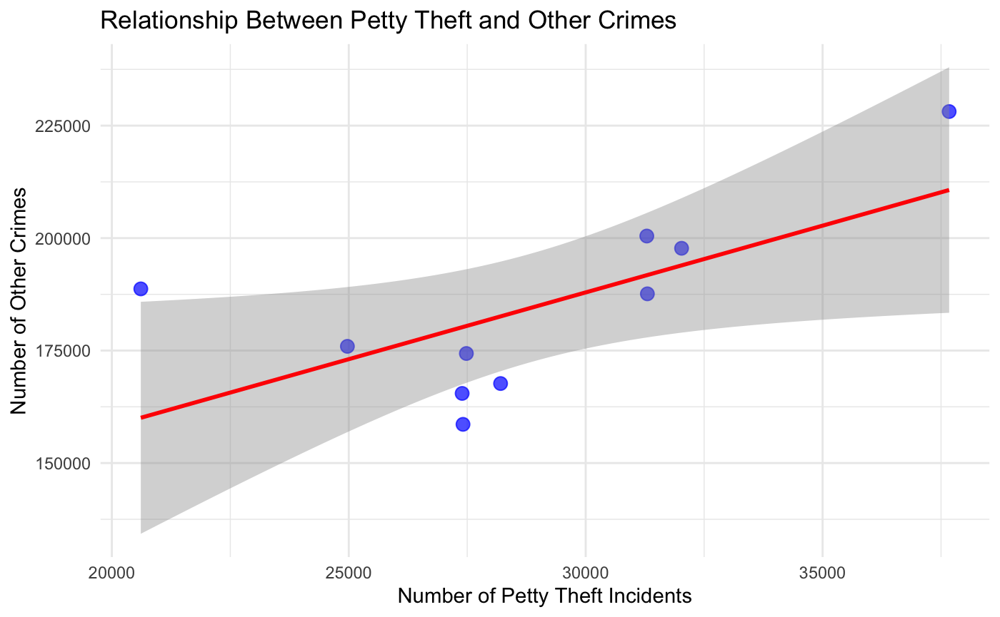
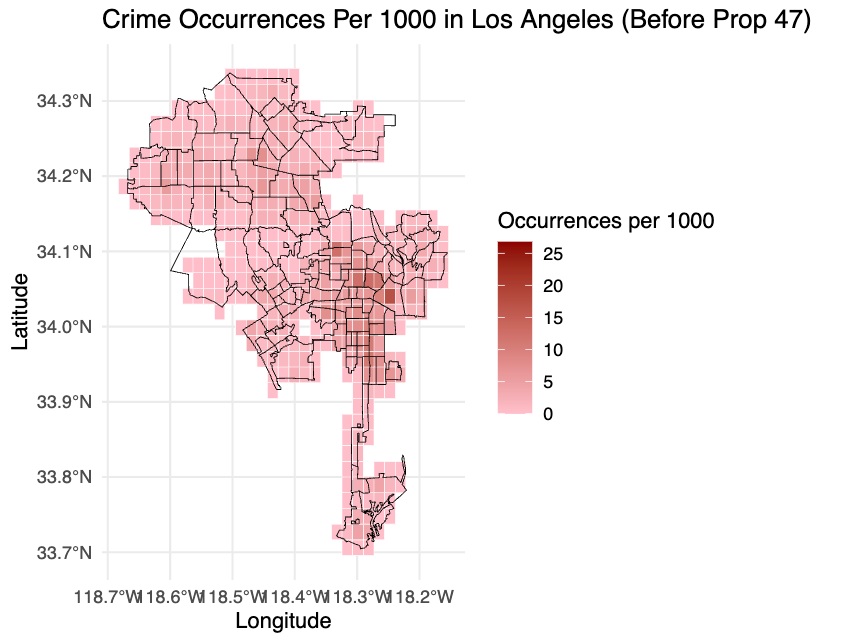
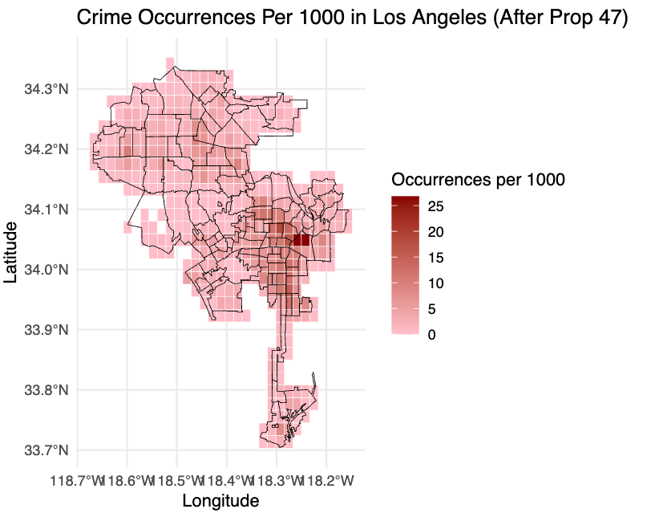

Project 2 - The Impact of Proposition 47 on Crime in Los Angeles
Introduction
This project investigates the effects of Proposition 47 — a 2014 California ballot initiative reclassifying non-violent offenses from felonies to misdemeanors — on crime rates in Los Angeles. It evaluates the policy’s impact on overall crime trends, crime composition, geographic disparities, and demographic effects within four years of implementation.
Process
Data Pre-processing:
- Sourced extensive crime data (2010-2019) from the Los Angeles Police Department via the City of Los Angeles Open Data Portal.
- Performed data cleaning steps, including removal of redundant data, resolving crime code discrepancies, and standardizing date/time formats and incident locations.
Exploratory Data Analysis:
- Conducted detailed visual analyses (time-series, histograms, bar charts) to identify crime trends pre- and post-Proposition 47.
- Identified significant post-implementation increases in overall crime incidents and changes in specific crime types, notably property crimes.
Statistical Analysis & Modeling:
- Employed multivariate regression and two-sample t-tests to analyze relationships between crime rates, crime types, demographics, and policy effects.
- Assessed crime patterns geographically and demographically to detect disparities and crime concentration areas.
Outcomes
- Detected an initial 40% surge in crime incidents in the year following Proposition 47, with crime levels remaining elevated compared to pre-implementation.
- Found significant increases in specific property crimes (e.g., petty theft, shoplifting) post-Proposition 47, which was abnormal compared to national trends.
- Observed no significant reduction in racial disparities in arrest rates.
- Crime concentration areas (Downtown, Hollywood, Van Nuys) remained consistent, suggesting entrenched geographic crime dynamics.
Outputs
 
 